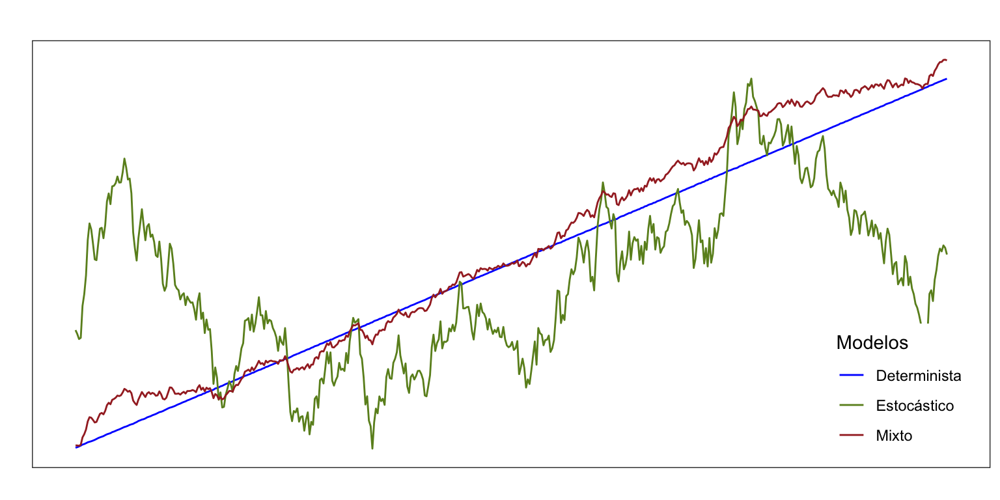
Series Temporales. Definición y componentes
Máster de Bioestadística (Modelización Estadística)
1 Introducción
“Hacer previsiones supone realizar la mejor apreciación posible de algún suceso futuro.” Wilson and Keating (1996)
“Time series are analysed to understand the past and to predict the future.” Metcalfe and Cowpertwait (2009)
Los datos temporales, series temporales, se analizan para entender el pasado y predecir el futuro posibilitando a los agentes tomar decisiones adecuadamente informados.
Algunas cabeceras de prensa determinan el número de ejemplares a imprimir cada día analizando la demanda pasada de su diario.
Red Eléctrica Española predice el consumo eléctrico hora a hora para ajustar la oferta a la demanda.
El Instituto Nacional de Estadística (INE) predice la población española para los próximos 50 años.
La predicción de series temporales es una herramienta a la hora de establecer políticas sociales, empresariales…
1.1 ¿Qué se puede predecir?
Algunos datos son más fáciles de prever que otros. Puedes consultar múltiples páginas web con la hora en que sale el Sol en Valencia desde mañana hasta dentro de un año y todas ellas coinciden. Sin embargo, no encontrarás ninguna con la valoración exacta de las acciones en bolsa de INDRA para los próximos días. En medio están las múltiples páginas que predicen el consumo eléctrico en el largo plazo (dentro de varios años); todas ofrecen valores similares, pero no coincidentes.
La calidad de una predicción depende de varios factores, entre ellos:
- nuestro conocimiento sobre los determinantes del acontecimiento
- la cantidad de información pasada disponible
- la semejanza del pasado con el futuro
- si las previsiones afectan a lo que estamos prediciendo.
1.2 ¿Para qué predecir?
Algunas de las razones por las que empresas y organismos necesitan hacer predicciones son:
Tomar decisiones en el presente sobre el futuro con más información reduciendo la incertidumbre.
Red eléctrica española predice la demanda de electricidad de los próximos días para gestionar el complejo sistema producción de electricidad y ajustar la demanda a la oferta.
Un supermercado predice la demanda de sus productos para evitar tanto rupturas de stock en el lineal como pérdidas por caducidad.
Una aerolínea predice la demanda asientos en sus vuelos para gestionar su flota de aviones y ajustar los precios de los billetes.
Medir el efecto de un shock en el mercado, un cambio en la regulación o una política empresarial.
¿La Covid-19 ha producido un cambio en la decisión de las parejas de tener hijos? ¿Se ha reducido o aumentado la natalidad tras la Covid-19?
La nueva regulación de apartamentos turísticos en la ciudad, ¿cómo afecta la ocupación hotelera?
¿En que medida un cambio en los parámetros o características de un juego de ordenador aumenta el tiempo de juego?
Evaluar un efecto calendario.
La variación en el número de turistas en marzo y abril, según como caiga la Semana Santa.
El efecto de un febrero bisiesto sobre las ventas.
El efecto de la temperatura sobre un enfermedad respiratoria o el consumo de electricidad.
1.3 ¿Qué haremos y qué no haremos en este curso?
En este curso nos vamos a centrar en los métodos objetivos más fiables para obtener predicciones. Métodos que son replicables, cuyos resultados –las predicciones– son verificables y que son usados ampliamente por parte de organizaciones y empresas.
No podremos ver todos los métodos existentes, ¡ni aunque hubiera un grado solo para predicciones! Pero los que veremos te darán la base para aprender otros métodos de previsión: alisado exponencial con doble estacionalidad, el vecino más próximo, vectores autorregresivos, redes neuronales; y para aprender otros enfoques a la hora de hacer previsiones: modelos jerárquicos de series, boostrapping, bagging…
No vamos a aprender a predecir cotizaciones de bolsa, relaciones entre divisas o ratios financieros. La metodología para predecir estas series es completamente diferente y muy poco exitosa. Si fuera fácil, estaríamos todos invirtiendo, no dando clases (yo) o recibiéndolas (vosotros).
Predeciremos las series de una en una, asumiendo que son independientes. Este supuesto no siempre se da, pero simplifica enormemente el análisis de una serie. Por ejemplo, predeciremos la serie de pernoctaciones en España en hoteles usando solo datos de esta serie. Sin embargo, seria de ayuda predecir de forma simultánea la serie de turistas llegados a España porque el volumen de pernoctaciones depende del número de turistas. Otra estrategia sería predecir las pernoctaciones en cada comunidad autónoma y luego sumarlas para obtener el total nacional.
2 Series Temporales
2.1 Definición
Una serie temporal es una variable medida secuencialmente en el tiempo a intervalos equiespaciados.
La representaremos por,
\[\{y_t\}_{t=1}^T=\{y_1,y_2,\ldots,y_T\}.\]
La serie aparece indexada por su fechado \(t\) y el valor \(T\) hará siempre referencia a la fecha del último dato.
El fechado varía en su frecuencia, que puede ser anual (baja frecuencia), trimestral, mensual, semanal, diario (alta frecuencia) o disponer casi de un continuo de datos.
2.2 Proceso generador de datos
El proceso generador de los datos de una serie temporal es en general desconocido, pero se puede aproximar por un modelo estadístico. Estos modelos se pueden clasificar en tres grandes familias según su naturaleza: deterministas, estocásticos y mixtos
En ocasiones las series temporales pueden ser modeladas de forma determinista ajustando los datos a funciones matemáticas: \[y_t=f(t)+\varepsilon_t.\]
Si las observaciones cercanas en el tiempo tienden a estar (cor)relacionadas, se puede aprovechar esta dependencia para entender la serie y predecirla con un modelo estocástico: \[y_t=f(y_{t-1},y_{t-2},\ldots)+\varepsilon_t.\]
A veces, ambas situaciones se dan simultáneamente (modelos mixtos): \[y_t=f(t,y_{t-1},y_{t-2},\ldots)+\varepsilon_t.\]
La Figura 1 muestra un ejemplo gráfico de estos tres modelos estadísticos. La complejidad de la serie es mayor en los modelos con parte estocástica.
En este curso se asumirá en todo momento que la serie temporal tiene una componente estocástica. Para series deterministas puedes usar los modelos de regresión verás en Modelos lineales.
2.3 Lectura de datos y representación gráfica
Antes de continuar vamos a importar con R tres de las series que usaremos de ejemplo en este tema: generación anual de residuos municipales per cápita (kg per cápita), los nacimientos mensuales y la demanda eléctrica diaria (GWh). Las tres series se refieren a España y servirán de ejemplo para el análisis de series con diferente fechado: anual, mensual y diario, respectivamente.
Generación de residuos municipales per cápita
Residuos es una serie anual de 1995 a 2022 (fuente Instituto Nacional de Estadística) que muestra los residuos recogidos por o en nombre de las autoridades municipales y eliminados a través del sistema de gestión de residuos. Los datos están disponibles en el fichero Residuos.csv, que contiene dos variables o columnas de datos. La primera columna corresponde al año de la serie y la segunda contiene los residuos recogidos en kg per cápita. En la primera fila del fichero aparece el nombre de cada columna. Los valores no tienen decimales y los datos de cada fila vienen separados por un punto y coma.
residuos <- read.csv2("./series/Residuos.csv",
header = TRUE)
residuos <- ts(residuos[, 2],
start = 1995,
frequency = 1)
Ojo con la lectura de datos
Usamos para leer los datos read.csv2, indicando que la primera línea tiene el nombre de las variables. Esta función asume que el separador decimal es la coma “,” y que el separador entre variables es el punto y coma “;”.
Si el separador decimal es el punto “.” y el separador de variables es la coma “,”, debes usar read.csv.
En cualquiera de estas funciones puedes modificar el separador decimal por medio del argumento dec; también puedes usar el argumento sep para indicar el carácter usado como separador de variables.
La función ts, de la librería stats, convierte un objeto (vector o matriz) en la clase serie temporal. En este caso seleccionamos solo la segunda columna, la que contiene el número de residuos generados.
- Con
startindicamos el fechado del primer dato. - Con
frequencyindicamos la frecuencia, que en este caso es un dato por año.
Usa help(ts) para obtener más información y str(residuos) para ver qué contiene un objeto serie temporal.
Nombre del fichero y nombre de la serie
Por comodidad (o pereza), muchas veces el nombre del fichero con los datos, el nombre del data.frame con su contenido en R y el nombre de la serie es el mismo. No tiene por que ser así, aunque en estos apuntes es lo más habitual.
En este caso, observa que primero creamos “residuos”, una base de datos (data.frame) con el contenido del fichero “Residuos.csv” que tiene dos variables (fechado y valores de la serie). Luego creamos la serie temporal “residuos” extrayendo de la base de datos la segunda columna (valores de la serie) y fechándola. Por tanto, estamos machacando la base de datos al poner a la serie el mismo nombre.
Podemos dibujar la serie Residuos con la función plot o mejor con autoplot. Esta última está en el paquete forecast.
En general, las funciones gráficas que vamos a usar pertenecen a la librería forecast, pero en ocasiones las ampliaremos con funciones de la librería ggplot2. Te recomiendo cargar estas dos librerías desde el inicio. En casi todos los casos existe una versión de la función gráfica usada en la librería stats.
library(forecast)
library(ggplot2)autoplot(residuos,
xlab = "",
ylab = "Kg per cápita",
main = "")
Nacimientos en España
Nacimientos es una serie mensual de enero de 1975 a diciembre de 2023 (fuente: Instituto Nacional de Estadística). Los datos están disponibles en el fichero Nacimientos.csv. La primera columna del fichero tiene la fecha y la segunda la serie propiamente. En la primera fila aparece el nombre de cada columna. De nuevo seleccionamos solo la columna con los datos de nacimientos.
nacimientos <- read.csv2("./series/Nacimientos.csv",
header = TRUE)
nacimientos <- ts(nacimientos[, 2],
start = c(1975, 1),
frequency = 12)
¿Sobrías responder a estas preguntas?
¿Por qué se usa el argumento “header = TRUE”?
¿Por qué la serie corresponde a la segunda columna de la base de datos “nacimientos”?
En este caso:
- Con
startindicamos que el primer dato es enero de 1975. También sería correctostart = 1975. Si el primer dato fuera, por ejemplo, marzo de 1975, podríamos ponerstart = c(1975, 3)ostart = 1975 + 2/12. - Con
frequencyindicamos que se tienen 12 datos (meses) por año. Si la serie fuera trimestral pondríamosfrequency = 4.
autoplot(nacimientos,
xlab = "",
ylab = "Nacimientos",
main = "")
Demanda eléctrica
Demanda eléctrica es una serie diaria desde el 1 enero de 2023 hasta el 31 diciembre de 2023 (fuente: Red Electrica de España). Los datos están disponibles en el fichero Consumo electrico.csv. El fichero solo tiene una columna, encabezada con un nombre, con los datos de la serie y el carácter decimal es el punto.
electricidad <- read.csv("./series/Consumo electrico.csv",
header = TRUE)
electricidad <- ts(electricidad[, 1],
start = c(1, 7),
frequency = 7)En este caso:
- Con
startindicamos que el primer dato es un domingo (día 7 de la semana) de la primera semana. Como ves no hay referencia al año. También sería correctostart = 1 + 6/7. - Con
frequencyindicamos que se tienen 7 datos (días) por semana. Si la serie fuera de lunes a viernes pondríamosfrequency = 5.
autoplot(electricidad,
xlab = "",
ylab = "GWh",
main = "")
2.4 Funciones útiles para objetos de clase ts
Otras funciones relacionadas con los objetos de clase serie temporal que pueden ser útiles son:
startda el fechado del primer dato, yendda el fechado del último dato.
start(nacimientos); end(nacimientos)[1] 1975 1[1] 2023 12start(electricidad); end(electricidad)[1] 1 7[1] 53 7frequencyda la frecuencia de los datos.
frequency(nacimientos)[1] 12frequency(electricidad)[1] 7timecrea un vector con el fechado de una serie. Observa como guarda internamenteRel fechado de una serie temporal. Esta es una función que usaremos constantemente.
head(time(nacimientos), n = 48) #Mostramos sólo los 4 primeros años Jan Feb Mar Apr May Jun Jul Aug
1975 1975.000 1975.083 1975.167 1975.250 1975.333 1975.417 1975.500 1975.583
1976 1976.000 1976.083 1976.167 1976.250 1976.333 1976.417 1976.500 1976.583
1977 1977.000 1977.083 1977.167 1977.250 1977.333 1977.417 1977.500 1977.583
1978 1978.000 1978.083 1978.167 1978.250 1978.333 1978.417 1978.500 1978.583
Sep Oct Nov Dec
1975 1975.667 1975.750 1975.833 1975.917
1976 1976.667 1976.750 1976.833 1976.917
1977 1977.667 1977.750 1977.833 1977.917
1978 1978.667 1978.750 1978.833 1978.917head(time(electricidad), n = 28) #Mostramos sólo las 4 primeras semanasTime Series:
Start = c(1, 7)
End = c(5, 6)
Frequency = 7
[1] 1.857143 2.000000 2.142857 2.285714 2.428571 2.571429 2.714286 2.857143
[9] 3.000000 3.142857 3.285714 3.428571 3.571429 3.714286 3.857143 4.000000
[17] 4.142857 4.285714 4.428571 4.571429 4.714286 4.857143 5.000000 5.142857
[25] 5.285714 5.428571 5.571429 5.714286
Fechado de la serie
¿Tienes claro cómo R guarda internamente el fechado de una serie? ¿Qué indican los valores decimales?
cycle, crea un vector con la posición en el ciclo de cada observación. Para una serie mensual sus valores van de 1 a 12, para una serie diaria sus valores irían 1 a 7. También usaremos esta función de forma regular.
head(cycle(nacimientos), n = 48) #Mostramos sólo los 4 primeros años Jan Feb Mar Apr May Jun Jul Aug Sep Oct Nov Dec
1975 1 2 3 4 5 6 7 8 9 10 11 12
1976 1 2 3 4 5 6 7 8 9 10 11 12
1977 1 2 3 4 5 6 7 8 9 10 11 12
1978 1 2 3 4 5 6 7 8 9 10 11 12head(cycle(electricidad), n = 28) #Mostramos sólo las 4 primeras semanasTime Series:
Start = c(1, 7)
End = c(5, 6)
Frequency = 7
[1] 7 1 2 3 4 5 6 7 1 2 3 4 5 6 7 1 2 3 4 5 6 7 1 2 3 4 5 6
3 Componentes de una serie temporal y su combinación
Toda serie temporal es la combinación de hasta cinco componentes: tendencia, ciclo, estacionalidad, intervención y residuo.
3.1 Tendencia, \(T_t\)
Definición: la tendencia de una serie es su comportamiento a largo plazo (varios años). Describe los cambios sistemáticos de la serie temporal que no aparentan ser periódicos.
Respecto a la dirección del movimiento la tendencia puede ser:
- Creciente: a largo plazo la serie aumenta su valor
- Decreciente: a largo plazo la serie disminuye su valor
- Estacionaria: a largo plazo la serie mantiene su valor
Respecto del proceso generador de la tendencia, puede ser:
- Determinista: \(T_t = f(t)\)
- Estocástica: \(T_t = f(T_{t-1}, T_{t-2},\ldots)\)
- Mixta: \(T_t = f(t,T_{t-1}, T_{t-2},\ldots)\)
En la Figura 5 se muestran ejemplos de series temporales según dirección del movimiento y pendiente de la tendencia.
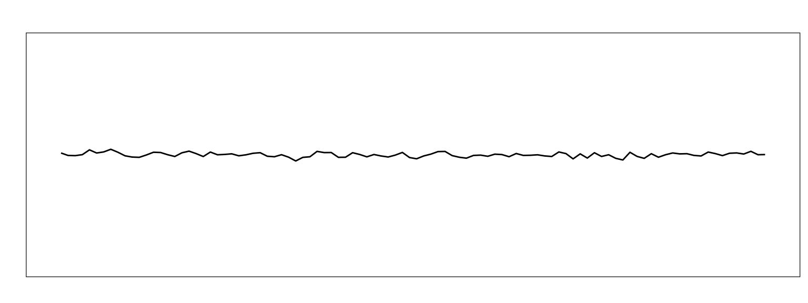
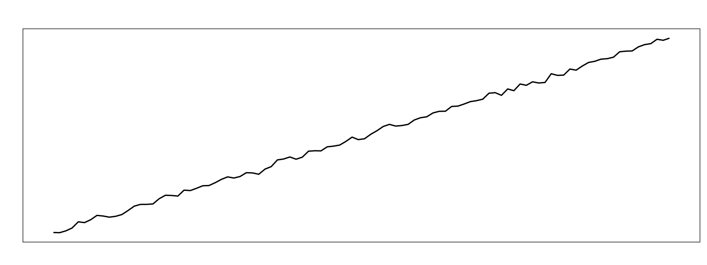
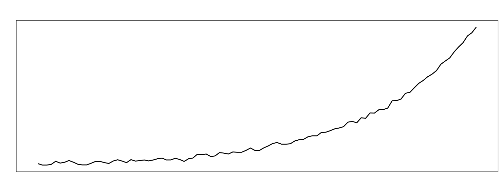
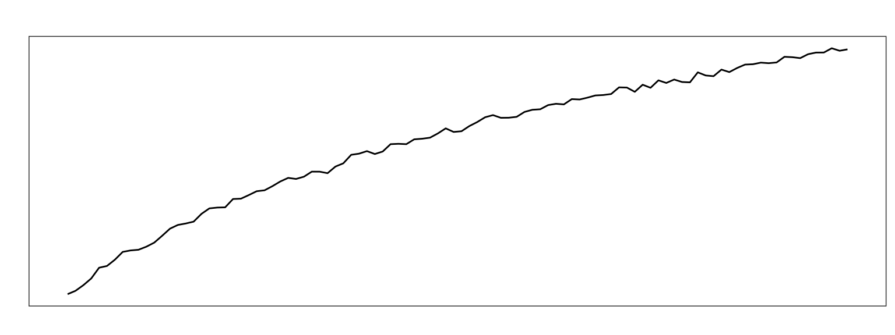
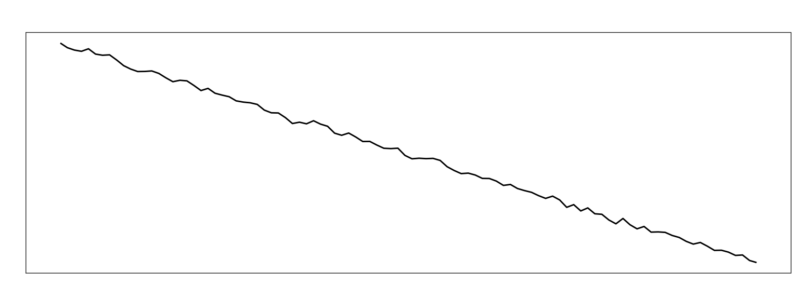

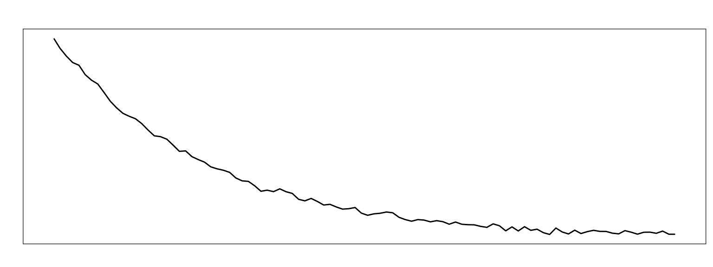
Si la serie temporal es suficientemente larga es posible observar cambios en la dirección del movimiento de la tendencia que definen los ciclos.
3.2 Ciclo, \(C_t\)
Definición: Son patrones sin periodicidad fija que abarcan varios años.
Por ejemplo, los ciclos económicos, los cambios climáticos asociados al fenómeno El Niño, o las manchas solares (véase Figura 6).

La serie de Nacimientos es lo suficientemente larga como para observarse un ciclo completo, que queda identificado por dos cambios de tendencia consecutivos de signo opuesto (véase Figura 7):
- A finales de la década de los 90 la tendencia decreciente en los nacimientos pasa a creciente por la llegada de inmigrantes con una mayor tasa de natalidad.
- A finales de la primera década del 2000 la tendencia creciente pasa a decreciente porque la Gran Recesión provoca el regreso a sus países de origen de muchos de estos inmigrantes.
De esta forma, observamos un ciclo completo desde 1975 hasta poco antes de 2010 (periodo entre dos cambios de tendencia), y el inicio del siguiente ciclo, en el que aun estamos.
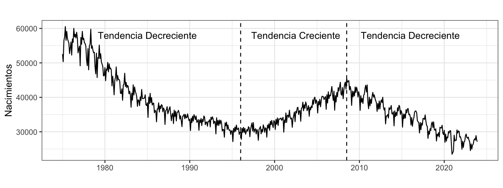
3.3 Estacionalidad, \(S_t\)
Definición: Son patrones repetitivos de periodicidad fija e inferior al año.
El orden de la periodicidad lo denominaremos \(m\), por tanto el patrón estacional se repite cada \(m\) periodos. Lógicamente, \(m\) toma el valor 12 para datos mensuales, el valor 4 para datos trimestrales, 7 para datos diarios de lunes a domingo, etc.
La componente estacional surge por factores climatológicos, institucionales o sociales.
En ocasiones no es fácil determinar la existencia de estacionalidad o su orden. En este caso, se puede usar el análisis espectral, que no veremos en este curso, para analizar esta componente. La librería forecast dispone de la función findfrequency que devuelve la frecuencia dominante de una serie usando el análisis espectral.
La serie Nacimientos tiene una estacionalidad de orden 12, causada principalmente por el número de días del mes (véase la Figura 8). Cada año se repite una misma pauta: los meses de febrero, por tener 28 (o 29 días en años bisiestos), presentan el menor número de nacimientos y son los valles en la Figura 8; y, en general, en los meses de 31 días hay más nacimientos que en los demás meses del año.
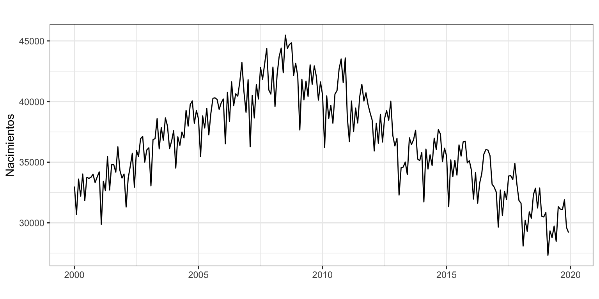
La Figura 9 muestra la demanda eléctrica diariamente para cuatro semanas, desde el lunes 30 de enero hasta el domingo 26 de febrero (semanas 6 a 9 del año). Tiene, por tanto, una estacionalidad de orden 7. En el eje OX aparecen etiquetados los lunes de cada semana que permiten identificar el siguiente patrón semanal: de lunes a viernes un consumo similar, seguido de una caída en el consumo el sábado, y el domingo como el día de menor consumo
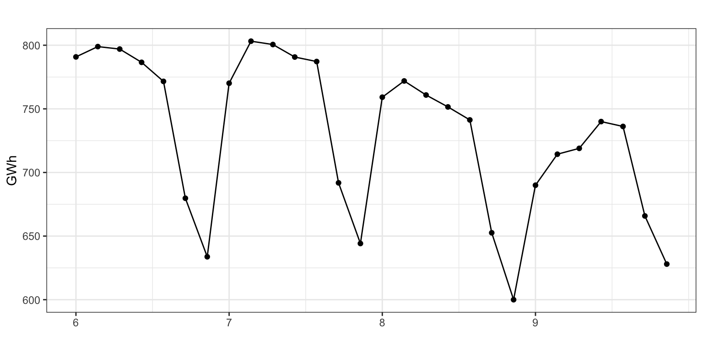
Si el fechado de la serie es de muy alta frecuencia, puede ocurrir que se superponga más de una componente estacional. La Figura 10 muestra la serie corresponde a la demanda eléctrica (GW) recogida cada hora durante el mes de febrero de 2021. El eje OX señala el consumo de la primera hora de cada día del mes (desde media noche hasta la una de la madrugada). Se aprecia una estacionalidad diaria de orden \(24\), otra semanal de orden \(168 =7 \times 24\) y si mostráramos varios años de consumo, también se observaría otra mensual.
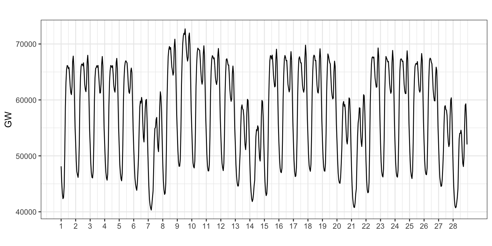
Series con más de una componente estacional
En este curso no analizaremos series con más de una componente estacional. Si quieres tener una primera aproximación de como se hace, puedes ir a la píldora Múltiples componentes estacionales.
3.4 Intervención, \(I_t\)
Definición: Es un factor sistemático no periódico, o irregular, que vendría determinado por fenómenos ocasionales que provocan observaciones anómalas y valores atípicos en la serie temporal.
Por su relación con fechas concretas, podemos distinguir dos tipos:
- Efectos calendario: irregularidades específicas en la serie temporal que se producen durante determinados periodos de tiempo. Por ejemplos los días festivos en series diarias; o la Semana Santa, días laborales y febrero bisiesto en series mensuales.
- Otros efectos no sujetos a calendario: irregularidades no específicas ni sujetas a fechas concretas. Por ejemplo, pandemias, catástrofes naturales, huelgas, caída del sistema eléctrico o de los servidores de una red social, etc.
En la serie mensual Nacimientos, los meses de febrero bisiestos (puntos rojos) presentan un número de nacimientos mayor que los meses de febrero no bisiestos (efecto calendario). Para algunos años este hecho es mas claro (véase Figura 11). Además, a finales del año 2020 y principios del 2021 se observa una caída inusual en el número de nacimientos (puntos verdes) debido a que la pandemia causada por la Covid-19 retrasó la decisión de tener hijos de muchas parejas. Este es un ejemplo de intervención no sujeta a calendario.
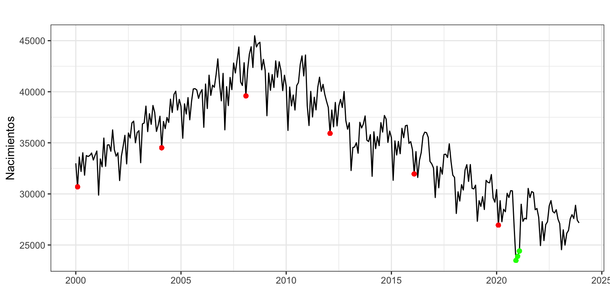
En la serie diaria Electricidad cuando un día entre semana es festivo, el consumo se reduce notablemente, apareciendo un efecto calendario. Si se trata de un día aislado, el efecto es muy fácil de identificar y analizar. Un ejemplo, observable en la Figura 12, es el miércoles 1 de noviembre de 2023, día de Todos los Santos, identificado con un punto rojo en la figura. Se aprecia que el consumo fue muy inferior al observado el miércoles precedente y posterior (puntos verdes). Si los festivos abarcan varios días, el efecto sigue siendo perfectamente identificable, pero es más complejo de analizar. Un ejemplo es la última semana de diciembre donde el consumo es muy inferior al observado en las semanas previas debido, por un lado, al efecto del día festivo de Navidad (punto azul) y, por otro lado, al periodo semi-vacacional que estas festividades supone en España. También se aprecia la intervención asociada a la semana que contiene los festivos de la Constitución y la Inmaculada (martes 6 y jueves 8 de diciembre).
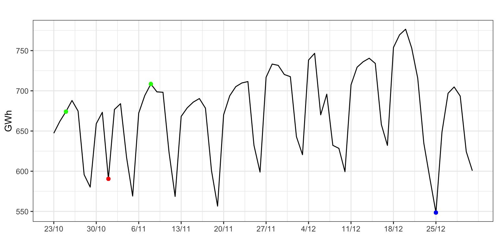
Por su naturaleza, podemos distinguir tres tipos básicos de intervención (aunque hay más):
- Pulso (Additive Outlier, AO)
-
En un periodo aislado la serie toma un valor anómalo (véase Figura 13, panel izquierdo). Por ejemplo, un día entre semana es festivo y la demanda eléctrica es inferior a la usual; o el mes de agosto de 2024 la olimpiadas de París incrementan significativamente el turismo y la ocupación hotelera en la ciudad respecto de agostos precedentes.
- Cambio transitorio (Transitory Change, TC)
-
En un periodo un shock genera un valor anómalo en la serie y el efecto del shock va desapareciendo poco a poco (véase Figura 13, panel central). Por ejemplo, las redes sociales ponen de moda un producto que temporalmente aumenta sus ventas. Pero, conforme pasa el tiempo, los consumidores se olvidan del producto y sus ventas vuelven poco a poco a su nivel previo.
- Cambio permanente (Level Shift, LS)
-
En un periodo la serie cambia de nivel y permanece de forma permanente en este nuevo nivel (véase Figura 13, panel derecho). Por ejemplo, enfrente de un supermercado abre la competencia, de forma que sus ventas descienden bruscamente de forma permanente. La apertura en una ciudad de una nueva línea de tranvía incrementa de forma permanente los usuarios del transporte público en esa ciudad.
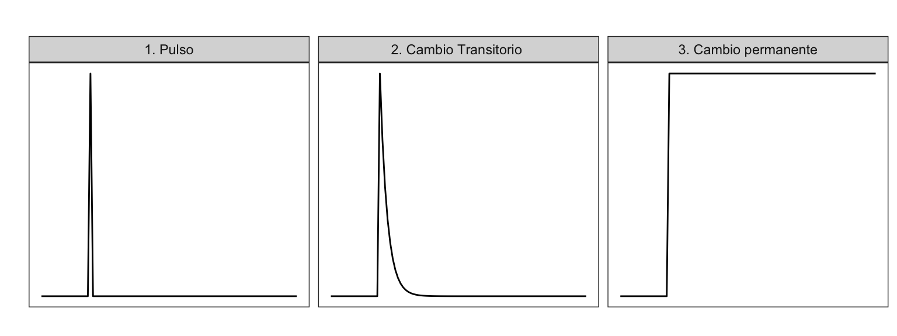
3.5 Residuo, \(R_t\)
Definición: No presenta un comportamiento sistemático a corto, medio o largo plazo por lo que no se puede predecir de modo alguno. Es la parte de la serie que se debe a puro azar.
Aunque inicialmente no se hará ningún supuesto sobre el residuo, se espera que sea ruido blanco: media cero, incorrelado y homocedástico. Es decir \(R_t \sim iid(0, \sigma^2\)).
3.6 Esquema aditivo y multiplicativo
Una serie temporal siempre tiene tendencia y residuo. La presencia de estacionalidad, ciclo e intervención depende de la naturaleza de la serie. Por ejemplo, una serie anual no tendrá nunca estacionalidad y en una serie corta no se podrá observar el ciclo.
Las componentes de una serie temporal se pueden combinar de múltiples formas.
En el esquema aditivo cada componente suma su efecto sobre las demás, \[y_t = T_t + S_t + C_t + I_t + R_t.\] La demanda diaria de electricidad es un ejemplo de este tipo de esquema (Figura 14). El panel superior muestra la serie en el tiempo e identificamos el esquema aditivo porque la amplitud estacional (para cada semana la diferencia entre el día de más consumo y el de menos consumo) se mantiene constante en el tiempo. En el panel inferior tenemos una gráfica media-varianza, donde cada punto corresponde a una semana, la coordenada X es el consumo de esa semana y la coordenada Y la desviación típica del consumo para los días de esa semana (variabilidad intrasemanal). Este segundo panel revela el esquema aditivo de la serie porque no se observa un patrón creciente en los puntos: más consumo no implica una mayor desviación típica.
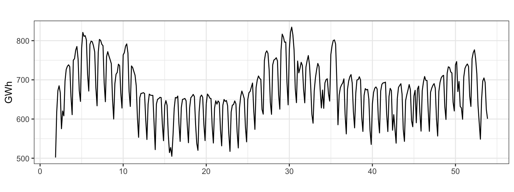

En el esquema multiplicativo cada componente supone un incremento porcentual respecto de las demás, \[y_t = T_t \cdot S_t \cdot C_t \cdot I_t \cdot R_t.\] La serie Nacimientos es un ejemplo de esquema multiplicativo. En el panel superior de la Figura 15, que muestra la serie, se observa que según decrece el número de nacimientos, también decrece la amplitud estacional. Además, en el panel inferior cada punto corresponde a un año: en el eje X los nacimientos de ese año y en el eje Y la desviación típica de los nacimientos mensuales de ese año (variación intraanual). En este panel se observa un patrón creciente en los puntos, revelando el esquema multiplicativo de la serie.
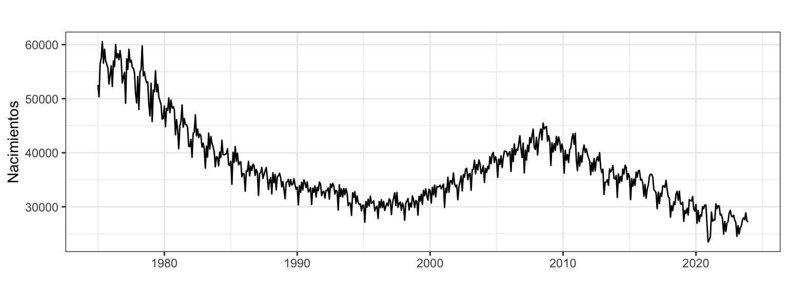
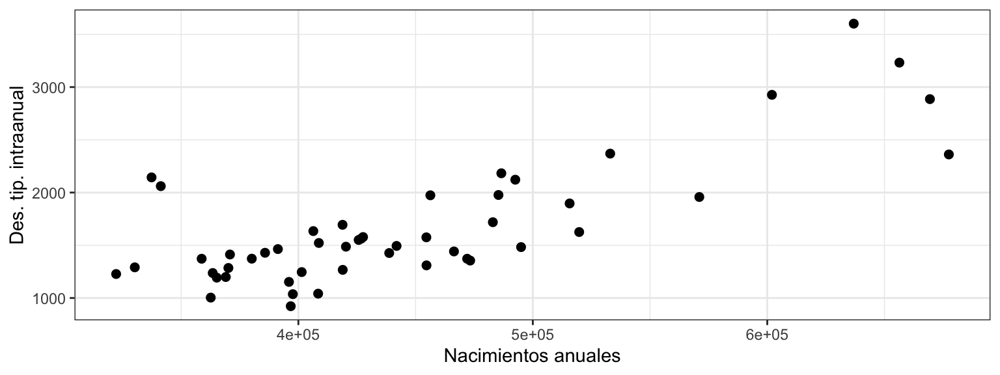
Si una serie presenta un esquema multiplicativo, su logaritmo lo presentará aditivo. A lo largo del curso se verán otras razones por las que puede ser aconsejable analizar el logaritmo de una serie temporal.
En principio, cualquier combinación entre las componentes es posible:
- \(y_t = (T_t + C_t) \cdot S_t + I_t + R_t\)
- \(y_t = (T_t + S_t + C_t + I_t)R_t\)
- \(y_t = T_t \cdot S_t \cdot C_t \cdot I_t + R_t\)
- …
4 Manipulación de una serie
4.1 Idea general
Podemos manipular una serie temporal con diferentes fines:
- extraer la tendencia (eliminando la estacionalidad), por ejemplo, pasando de una serie mensual a una anual, o de una serie diaria a una semanal.
- extraer la estacionalidad (eliminando la tendencia) de forma sencilla, aunque no muy precisa.
- recortar una serie para obtener una submuestra.
- extraer una subserie correspondiente a un único periodo estacional. Por ejemplo, los nacimientos en febrero o el consumo de electricidad de los domingos.
Estas operaciones nos permitirán mejorar nuestra capacidad descriptiva de la serie, identificar mejor el tipo de esquema entre las componentes, facilitar la estimación del proceso generador o ampliar las herramientas de análisis y predicción de una serie temporal.
4.2 Extracción de la tendencia
Si tenemos una serie con estacionalidad y agregamos la serie –obteniendo un dato por año, si la serie es mensual, o un dato por semana, si es diaria– obtenemos una nueva serie sin estacionalidad, solo con tendencia.
Dependiendo de la naturaleza de la serie, convendrá agregar sumando los datos (consumo eléctrico, residuos generados, viajeros transportados, nacimientos) o sacando la media (temperatura, número de parados, ocupación hotelera).
Veamos como extraer la tendencia de la serie Nacimientos usando la función aggregate con el argumento FUN = sum.
nacimientosAnual <- aggregate(nacimientos, FUN = sum)
autoplot(nacimientosAnual/1000,
xlab = "",
ylab = "Nacimientos (miles)",
main = "")
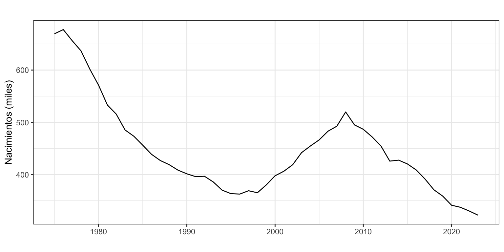
Ahora para la demanda de electricidad.
electricidadSemanal <- aggregate(electricidad, FUN = sum)
autoplot(electricidadSemanal,
xlab = "",
ylab = "GWh",
main = "")
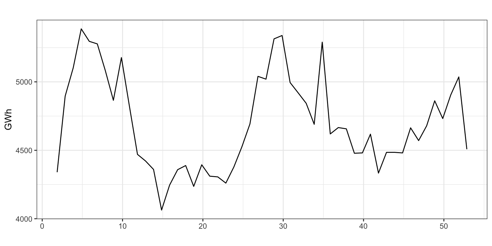
La función aggregate aplicada a una serie temporal agrega los datos de cada periodo estacional completo aplicando la función especificada en FUN.
- Una serie trimestral o mensual la transforma en anual, una serie diaria en semanal.
- La función a usar dependerá de la naturaleza de los datos y del objetivo perseguido (
FUN=sum,FUN=mean,FUN=sd…) - Esta función tiene un uso más amplio en
R. Usa la funciónhelppara aprenderlo.
Atención
La agregación no tiene por que empezar en el primera componente estacional. Por ejemplo, la serie Demanda eléctrica se inicia el domingo 1 de enero, así que el primer dato de la serie agregada irá del domingo 1 de enero al sábado 7 de enero, un periodo estacional completo; el segundo dato de la serie agregada ira del domingo 8 al sábado 14 de enero; y así sucesivamente. El último dato de la serie agregada será del domingo 24 al sábado 30 de diciembre. El 31 de diciembre no formará parte de la serie agregada.
4.3 Extracción de la estacionalidad
Tenemos varias alternativas gráficas para visualizar la estacionalidad y numéricas para calcular la estacionalidad de una serie.
Visualización de la estacionalidad
Podemos hacer una gráfico de la serie contra cada periodo estacional. Este gráfico permite identificar el patrón estacional de la serie y su evolución en el tiempo. Existen varias opciones para este tipo de gráficos, veremos dos de ellas: gráfico de subseries y gráfico de líneas.
Veamos primero un ejemplo de gráfico de subseries que muestra para cada periodo estacional la subserie de valores de ese periodo y el valor medio de la subserie (líneas horizontales).
Para la serie Nacimientos, recortada desde el año 2000 para facilitar la interpretación, la Figura 18 muestra como el mes de febrero es el que presenta menor número de nacimientos. Por contra, los meses de 31 días presentan en media un número de nacimientos mayor que los meses de 30 días. La excepción es septiembre, un mes de 30 días pero donde el número de nacimientos supera el del mes de agosto de 31 días. Una explicación posible es que muchos nacimientos por cesárea que corresponderían a finales de agosto se programen en septiembre para esquivar este mes festivo.
nacimientosb <- window(nacimientos, start = 2000)
ggsubseriesplot(nacimientosb) +
ylab("Nacimientos") +
xlab("") +
ggtitle("")
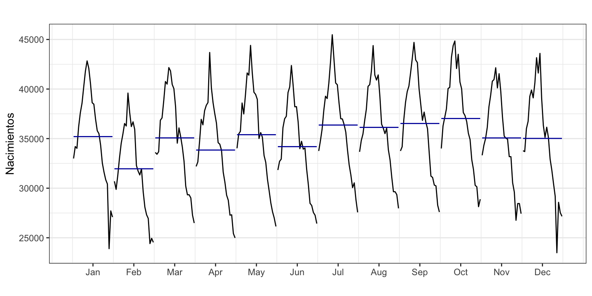
Para las series con tendencia o esquema multiplicativo, el valor medio de las subseries puede llevarnos a una interpretación incorrecta de la estacionalidad. La función monthplot de stats realiza un gráfico similar.
Una alternativa es el gráfico de líneas, donde cada linea muestra la evolución de un periodo estacional. Para Nacimientos la Figura 19 muestra los nacimientos desde 2018 a 2023, donde cada año es una línea. Se observa perfectamente el efecto de la pandemia sobre el número de nacimientos desde noviembre de 2020. Si se incluye el argumento polar=TRUE, se obtiene una versión tipo tela de araña de este gráfico.
ggseasonplot(window(nacimientos, start = 2018),
year.labels = TRUE,
xlab = "",
ylab = "Nacimientos",
main = "")
Cálculo de la componente estacionalidad
Las gráficas ayudan a describir y entender un poco mejor el patrón estacional. Sin embargo, si deseamos estimar la componente estacional, debemos proceder de otra forma.
La siguiente sintaxis usa la función tapply para estimar numéricamente la componente estacional bajo un esquema multiplicativo. Básicamente, calcula para cada mes (argumento cycle(nacimientosb)) la media (FUN = mean) del cociente nacimientosb / mean(nacimientosb).
componenteEstacional <- tapply(nacimientosb/mean(nacimientosb),
cycle(nacimientosb),
FUN = mean)
round(componenteEstacional, 2) 1 2 3 4 5 6 7 8 9 10 11 12
1.00 0.91 1.00 0.96 1.01 0.97 1.03 1.03 1.04 1.05 1.00 1.00 Los valores de la tabla previa indican que en febrero nacen un 9% menos de bebés respecto de la media anual y que, en general, los meses de 30 días están en la media o debajo de la media general. Por contra, los meses de 31 días están en o encima de la media general, destacando julio un 3% por encima y octubre un 5%. La anomalia es septiembre que, siendo un mes de 30 días, tiene un 4% más de nacimientos de la media anual.
Los cambios necesarios para estimar la componente estacional bajo un esquema aditivo son mínimos. Veámoslo para la serie Demanda eléctrica.
componenteEstacional <- tapply(electricidad - mean(electricidad),
cycle(electricidad),
FUN = mean)
round(componenteEstacional, 2) 1 2 3 4 5 6 7
10.29 32.74 36.77 35.67 23.17 -47.56 -89.37 De lunes a viernes la demanda eléctrica está por encima de la media semanal, especialmente de martes a jueves con un consumo más de 30 GWh por encima de la media. El sábado la demanda cae 48 GWh y el domingo se da la menor demanda, 89 GWh por debajo de la media semanal.
4.4 Recorte de una serie y extracción de una subserie
R proporciona varias funciones que permiten extraer una submuestra de la serie original. Podemos:
- seleccionar una submuestra especificando los puntos temporales de inicio y fin.
- seleccionar una submuestra seleccionando un periodo estacional determinado.
- quitar fácilmente un conjunto de datos usando índices.
Veamos algunos ejemplos de extracción con la serie Nacimientos y las funciones window y subset:
Función window, que recorta especificando fechados exactos.
window(nacimientos, start = c(2000, 1), end = c(2009, 12))selecciona de la serie original los datos desde enero de 2000 a diciembre de 2009.window(nacimientos, start = c(2010, 3))selecciona de la serie original los datos desde marzo de 2010 hasta el último dato (diciembre de 2023).window(nacimientos, end = c(1999, 12))selecciona de la serie original los datos desde el primero (enero de 1975) hasta diciembre de 1999.window(nacimientos, start = c(2000, 3), freq = TRUE)selecciona de la serie original solo los meses de marzo desde 2000.
Función subset, que recorta especificando posiciones de las observaciones.
subset(nacimientos, start = 10, end = 34)selecciona de la serie las observaciones que van desde la 10 a la 34, ambas inclusive.subset(nacimientos, start = 121)selecciona de la serie las observaciones que van desde la 121 hasta la última.subset(nacimientos, start = length(nacimientos) - 47)selecciona de la serie los últimos 4 años (2020 a 2023).subset(nacimientos, end = length(nacimientos) - 48)selecciona de la serie todo menos los últimos 4 años. Es decir, el último dato es diciembre de 2019.subset(nacimientos, season = 5)selecciona de la serie todos los meses de mayo.
window y subset
Durante el curso haremos un uso contante de la funciones window y subset. Practícalas para familiarizarte con su uso.
Además, puedes usar las funciones head y tail para extraer las primeras o las últimas observaciones.
5 Descomposición de una serie
5.1 Concepto
Los métodos que hemos visto para la descripción de la tendencia y la componente estacional son muy sencillos, pero no son ni rigurosos ni precisos. Veamos métodos más adecuados para extraer de una serie sus componentes.
Si la serie es demasiado corta para poder extraer el ciclo, entonces el ciclo queda recogido dentro de la tendencia. Por otro lado, las técnicas de identificación de la intervención son complejas por lo que esta componente queda incorporada al residuo. Por tanto, asumiremos que una serie tiene sólo Tendencia, Estacionalidad y Residuo:
- Esquema aditivo \(y_t = T_t + C_t + S_t + I_t + R_t = (T_t + C_t) + S_t +(I_t + R_t) = T'_t + S_t + R'_t\)
- Esquema multiplicativo \(y_t = T_t \cdot C_t \cdot S_t \cdot I_t \cdot R_t = (T_t \cdot C_t) \cdot S_t \cdot (I_t \cdot R_t) = T'_t \cdot S_t \cdot R'_t\)
Veremos a continuación como extraer estas tres componentes a partir de una serie original. Este proceso se denomina descomposición.
Hay múltiples formas de realizar una descomposición. Aquí veremos dos de ellas, la más sencilla, basada en el concepto de medias móviles (decompose), y otra más versátil y compleja a partir de regresiones locales ponderadas (stl).
Además, R proporciona (a través de paquetes específicos) el método de descomposición que utiliza el US Census Bureau and Statistics Canada, denominado X11, y el método que utiliza el Banco de España, denominado SEATS (Seasonal Extraction in ARIMA Time Series), aunque estos métodos solo son válidos para series mensuales y trimestrales.
En origen, los métodos de descomposición no sirven para realizar predicciones, pero actualmente se usan también con este fin (véase las funciones stlm y stlf del paquete forecast).
5.2 Descomposición por medias móviles
Ideas generales
La función decompose estima las componentes de tendencia, estacionalidad y residuo usando el método de medias móviles. En concreto decompose sigue los siguientes pasos para obtener cada componente:
Paso 1: Se estima la tendencia de una serie a partir de una media móvil centrada. Si el orden estacional es par, la media móvil es ponderada de orden \(m + 1\); y si el orden estacional es impar, la media móvil es de orden \(m\). En concreto,
- Si \(m=2k\): \(\hat{T}_t = \frac{\frac{1}{2}y_{t-k} + y_{t-k+1} + \ldots + y_t + \ldots + y_{t+k-1} + \frac{1}{2} y_{t+k}}{m}\),
- Si \(m=2k+1\): \(\hat{T}_t = \frac{y_{t-k} + y_{t-k+1} + \ldots + y_t + \ldots + y_{t+k-1} + y_{t+k}}{m}\).
Paso 2: Para un modelo con esquema aditivo calculamos la serie sin tendencia como \(y_t - \hat{T}_t\) y para un esquema multiplicativo como \(y_t/ \hat{T}_t\).
Paso 3: Para estimar la componente estacional para cada periodo estacional, calculamos el valor medio de la serie sin tendencia (paso 2) de forma independiente para los datos de cada estación. Así, obtenemos un vector con la estimación de las \(m\) componentes estacionales.
Después estos valores se ajustan para que sumen 0 (esquema aditivo) o para que sumen \(m\) (esquema multiplicativo). La componente estacional se obtiene repitiendo el vector de \(m\) componentes ajustadas hasta alcanzar la longitud de la serie original. Esto da \(\hat{S}_t\)
Paso 4: El residuo se obtiene como \(\hat{R}_t = y_t - \hat{T}_t - \hat{S}_t\) (esquema aditivo) o \(\hat{R}_t = y_t / (\hat{T}_t \cdot \hat{S}_t)\) (esquema multiplicativo)
La Tabla 1 muestra un ejemplo de descomposición aditiva por medias móviles para una serie simulada de orden estacional 5.
- La dos primeras columnas indican la estación de cada dato y el valor de la serie, para un total de 25 datos. La columna Ten ha sido obtenida siguiendo el paso 1 como una media móvil de orden 5: \[Ten_t = (Serie_{t-2} + Serie_{t-1} + Serie_{t} + Serie_{t+1} + Serie_{t+2})/5.\]
- La serie sin tendencia, columna Est + Res, se obtiene restando a la columna Serie la columna Ten, tal y como se indica en el paso 2.
- Para el cálculo de la columna Est, que repite de forma periódica la primera estimación de las 5 componentes estacionales, se sigue el paso 3. Para cada estación se promedian los valores de la columna Est + Res correspondientes a dicha estación.
- Puedes comprobar que la suma de los cinco valores de la componente estacional obtenidos en la columna Est vale 1.1. Para ajustar la componente estacional para que sume 0, a cada valor de la componente estacional se le resta su suma actual 1.1 dividida por 5, el número de estaciones. El resultado de este ajuste aparece en la columna Est corregida que será la componente estacional final.
- Siguiendo el paso 4, la columna Res se calcula restando a la serie original (columna Serie) la tendencia y la estacionalidad (columnas Ten y Est corregida).
Observa que en el proceso de descomposición se han perdido 4 datos para la tendencia y el residuo, dos al inicio de la serie y dos al final.
| Estacion | Serie | Ten | Est + Res | Est | Est corregida | Res |
|---|---|---|---|---|---|---|
| 1 | 17.00 | NA | NA | 9.14 | 8.92 | NA |
| 2 | 6.72 | NA | NA | -10.89 | -11.11 | NA |
| 3 | 5.08 | 20.62 | -15.54 | -10.06 | -10.28 | -5.48 |
| 4 | 8.79 | 27.89 | -19.10 | -9.46 | -9.68 | -9.64 |
| 5 | 65.53 | 28.00 | 37.53 | 22.37 | 22.15 | 15.16 |
| 1 | 53.31 | 28.58 | 24.73 | 9.14 | 8.92 | 15.59 |
| 2 | 7.28 | 29.79 | -22.51 | -10.89 | -11.11 | -11.62 |
| 3 | 8.00 | 25.62 | -17.62 | -10.06 | -10.28 | -7.56 |
| 4 | 14.84 | 19.13 | -4.29 | -9.46 | -9.68 | 5.17 |
| 5 | 44.67 | 20.08 | 24.59 | 22.37 | 22.15 | 2.22 |
| 1 | 20.85 | 21.78 | -0.93 | 9.14 | 8.92 | -10.07 |
| 2 | 12.02 | 21.64 | -9.62 | -10.89 | -11.11 | 1.27 |
| 3 | 16.51 | 18.97 | -2.46 | -10.06 | -10.28 | 7.60 |
| 4 | 14.14 | 22.07 | -7.93 | -9.46 | -9.68 | 1.53 |
| 5 | 31.31 | 23.08 | 8.23 | 22.37 | 22.15 | -14.14 |
| 1 | 36.37 | 24.68 | 11.69 | 9.14 | 8.92 | 2.55 |
| 2 | 17.06 | 26.66 | -9.60 | -10.89 | -11.11 | 1.29 |
| 3 | 24.53 | 30.92 | -6.39 | -10.06 | -10.28 | 3.67 |
| 4 | 24.02 | 30.56 | -6.54 | -9.46 | -9.68 | 2.92 |
| 5 | 52.62 | 33.48 | 19.14 | 22.37 | 22.15 | -3.23 |
| 1 | 34.59 | 33.51 | 1.08 | 9.14 | 8.92 | -8.06 |
| 2 | 31.66 | 33.51 | -1.85 | -10.89 | -11.11 | 9.04 |
| 3 | 24.65 | 32.95 | -8.30 | -10.06 | -10.28 | 1.76 |
| 4 | 24.01 | NA | NA | -9.46 | -9.68 | NA |
| 5 | 49.86 | NA | NA | 22.37 | 22.15 | NA |
Los principales inconvenientes de este método de descomposición son: i) se perderán datos al inicio y final de la serie –por ejemplo, si la serie es mensual se perderán seis datos al inicio y seis al final; ii) asume que la componente estacional no ha variado en el tiempo, cuando sabemos que para muchas series sociales y de consumo la componente estacional se ha suavizando con el tiempo; y iii) el cálculo de las componentes de tendencia y estacionalidad puede verse muy afectado por la presencia de datos muy anómalos.
Por el contrario, una de las ventajas de este método, además de su sencillez de cálculo, es que se puede usar tanto para esquemas aditivos (type="addi") como multiplicativos (type="multi").
La función decompose genera un objeto con las siguientes componentes:
$xpara la serie original,$trendpara la tendencia,$seasonalpara la estacionalidad,$randompara el residuo, y$figureque contiene las estimaciones de los m efectos estacionales ajustados. Es una extracción para un único año o semana de$seasonal.
Siempre que generes nuevos objetos en R a partir de funciones te recomiendo que con names y str mires qué hay en su interior.
En los métodos de descomposición que vamos a ver, para extraer las componentes individualmente puedes usar la función seasonal para la componente estacional, trendcycle para el componente de tendencia, y remainder para el residuo.
Ejemplo de esquema aditivo
Vamos a descomponer la serie Demanda eléctrica asumiendo un esquema aditivo (type = "addi).
eleDesAdi <- decompose(electricidad,
type = "addi")
autoplot(eleDesAdi,
xlab = "",
main = "")
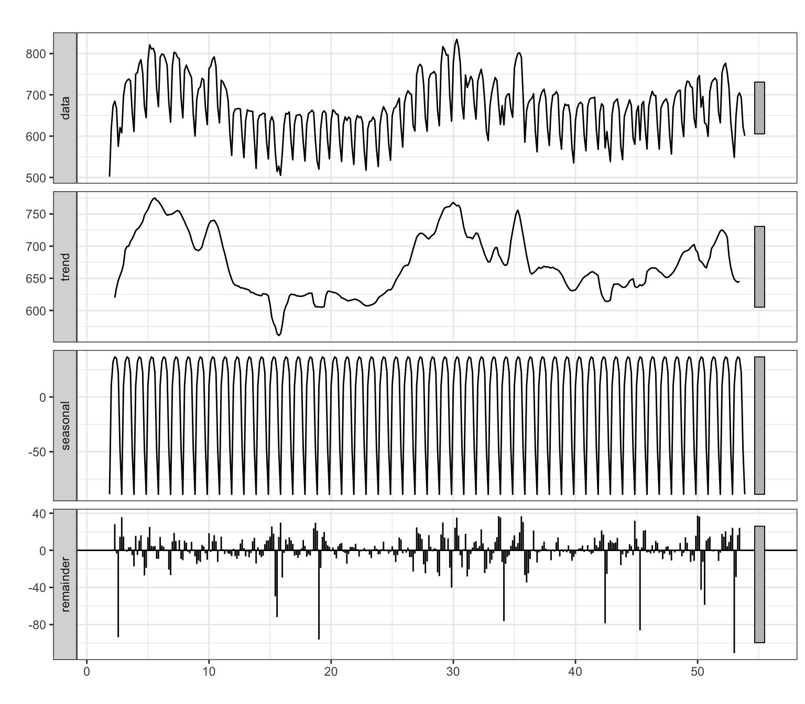
La Figura 20 muestra la serie original (panel superior) y sus tres componentes: tendencia (segundo panel), estacionalidad (tercer panel) y el residuo (panel inferior). Por tratarse de un esquema aditivo, la estacionalidad y el residuo se mueven en torno al valor de 0.
Es fácil verificar que si se suma para cada fecha la tendencia, la estacionalidad y el residuo se obtiene exactamente el valor de la serie:
tmp <- trendcycle(eleDesAdi) + seasonal(eleDesAdi) + remainder(eleDesAdi)
summary(electricidad - tmp) Min. 1st Qu. Median Mean 3rd Qu. Max. NA's
0 0 0 0 0 0 6 A continuación, tienes un ejemplo del manejo de las componentes extraídas para hacer una gráfica (véase la Figura 21).
autoplot(electricidad,
series="Demanda eléctrica",
xlab = "",
ylab = "MWh",
main = "") +
autolayer(trendcycle(eleDesAdi),
series="Tendencia") +
scale_colour_manual(values=c("Demanda eléctrica"="black","Tendencia"="red"),
breaks=c("Demanda eléctrica","Tendencia"))
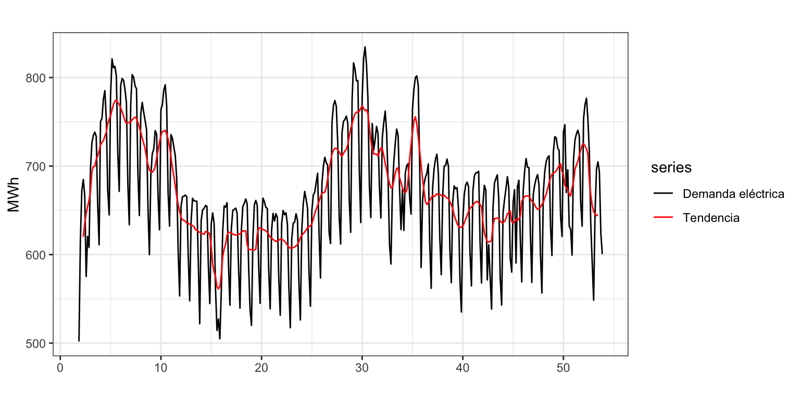
También podemos ver la componente estacional y verificar que suma 0. Ojo, como la serie empieza un domingo, el valor de la primera componente que se muestra es la del domingo y el valor de la última es la del sábado
eleDesAdi$figure[1] -88.89633 10.71022 32.18633 36.60378 35.23633 22.42286 -48.26319sum(eleDesAdi$figure)[1] -8.881784e-15Por último, podemos realizar una gráfica de la componente estacional (véase la Figura 22). Como la primera componente estacional es la del domingo, tenemos primero que ordenar las componentes. Esto es lo que hace la primera línea del siguiente código.
compEstacional <- eleDesAdi$figure[c(2:7, 1)]
ggplot() +
geom_line(aes(x = 1:7, y = compEstacional)) +
geom_hline(yintercept = 0, colour = "blue", lty = 2) +
ggtitle("") +
xlab("") +
ylab("GWh") +
scale_x_continuous(breaks= 1:7,
labels = c("Lunes", "Martes", "Miércoles", "Jueves",
"Viernes", "Sábado", "Domingo"))
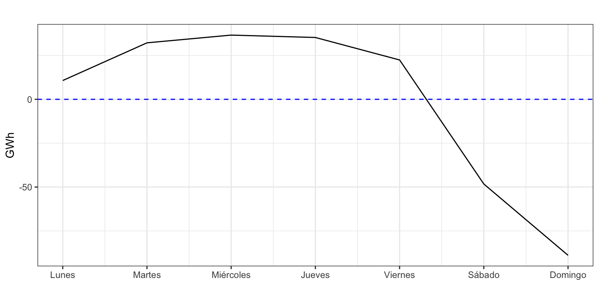
Ejemplo de Esquema Multiplicativo
Veamos ahora la descomposición de Nacimientos bajo un esquema multiplicativo (type = "mult").
nacDesMul <- decompose(nacimientos,
type = "mult")
autoplot(nacDesMul,
xlab = "",
main = "")
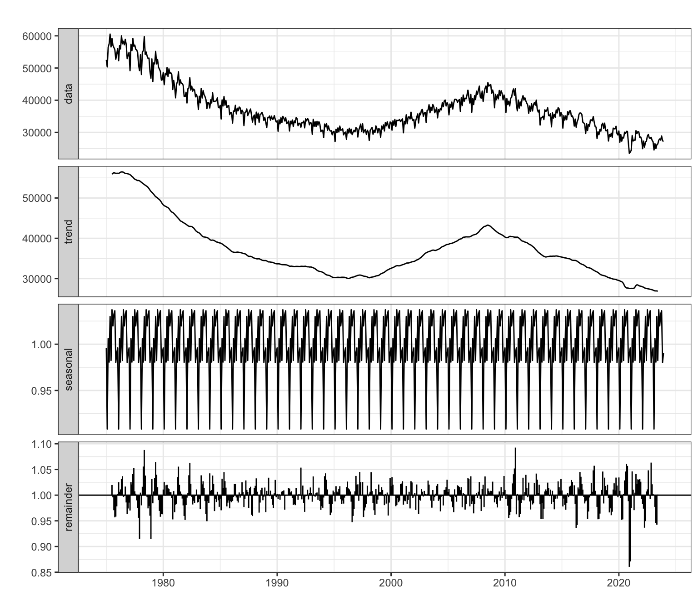
Observa que por tratarse de un esquema multiplicativo en la Figura 23 la componente estacional se mueve alrededor del valor 1 y debe interpretarse como una variación porcentual. Igualmente, el residuo también gira en torno al valor 1.
Los valores de la componente estacional se deben interpretar como variaciones porcentuales: en febrero nacen un 9.2% menos de niños y en octubre un 3.6% más, respecto de la media anual. Además, la suma de los valores de la componente estacional será 12.
nacDesMul$figure [1] 0.9960154 0.9083329 1.0061351 0.9806906 1.0299231 0.9824611 1.0372353
[8] 1.0197587 1.0324610 1.0361829 0.9802669 0.9905370sum(nacDesMul$figure)[1] 12
5.3 Descomposición por regresiones locales ponderadas
Ideas generales
La función stl estima las componentes de tendencia y estacionalidad a partir de regresiones locales ponderadas (técnica conocida como loess)
Sus ventajas son:
- No se perderán datos al inicio o al final de la serie.
- Asume que tanto la tendencia como la estacionalidad pueden cambiar con el tiempo y posibilita controlar este cambio a partir de parámetros.
- Es bastante robusta frente a valores atípicos.
Su principal desventaja es que esta técnica de descomposición solo es válida para esquemas aditivos. Es posible obtener con stl una descomposición multiplicativa descomponiendo primero el logaritmo de la serie, para después calcular la exponencial de las componentes.
La función stl genera un objeto con la componente $time.series que contiene en columna tres series temporales: seasonal, trend y remainder (de nuevo usa names y str para aprender más).
Los dos parámetros principales que debes elegir cuando utilices stl son la ventana de tendencia (t.window) y la ventana estacional (s.window). Estos parámetros controlan la rapidez con la que pueden cambiar las componentes de tendencia y estacionalidad con el tiempo. Valores pequeños permiten cambios más rápidos, valores grandes implican que no hay cambios. Ambos parámetros deben ser números impares:
t.windowes el número de observaciones consecutivas que se deben utilizar al estimar la tendencia. Consulta la ayuda para ver el valor por defecto.s.windowestá relacionado con el número observaciones que se deben utilizar al estimar cada valor de la componente estacional. No hay ningún valor por defecto para este parámetro. Establecerlo comoperiodicequivale a que la componente estacional sea periódica (es decir, idéntica a lo largo de los años). Si es un valor numérico, debe ser impar y mayor o igual a 7.
Ejemplo
Veamos un ejemplo de su uso para la serie Demanda eléctrica (Figura 24). Se ha usado el valor por defecto para t.window y se ha indicado que la estacionalidad es constante en el tiempo (s.window = "periodic"). Además, se ha especificado que se tenga en cuenta la posible existencia de valores atípicos (robust = TRUE).
eleStl <- stl(electricidad,
s.window = "periodic",
robust = TRUE)
head(eleStl$time.series, n = 7)Time Series:
Start = c(1, 7)
End = c(2, 6)
Frequency = 7
seasonal trend remainder
1.857143 -91.43206 597.5375 -4.275429
2.000000 13.80810 610.2002 -6.288319
2.142857 32.33979 622.8630 17.517258
2.285714 35.70651 635.4299 13.673593
2.428571 35.28141 647.9968 -16.168242
2.571429 26.55179 658.5280 -109.769821
2.714286 -52.25554 669.0592 3.736320autoplot(eleStl,
xlab = "",
main = "")
Podemos comprobar que los valores de la componente estacional suman cero.
sum(head(seasonal(eleStl), 7))[1] -9.616439e-08
Para Demanda eléctrica hemos obtenido tres estimaciones de la componente estacional: la primera obtenida con tapply, la segunda obtenida con decompose y la tercera con stl. Se puede observar que las tres estimaciones son muy similares, pero no coincidentes, y aunque los métodos de descomposición son preferibles a tapply, ninguna estimación es a priori mejor que otra.
# tapply
round(as.numeric(componenteEstacional), 2)
# decompose
round(seasonal(eleDesAdi)[c(2:7, 1)], 2)
# stl
round(seasonal(eleStl)[c(2:7, 1)], 2) L M X J V S D
tapply 10.29 32.74 36.77 35.67 23.17 -47.56 -89.37
decompose 10.71 32.19 36.60 35.24 22.42 -48.26 -88.90
stl 13.81 32.34 35.71 35.28 26.55 -52.26 -91.43
Si en lugar de periodic, fijamos el parámetro s.window a, por ejemplo, 11 (siempre un valor impar), estaremos permitiendo que la estacionalidad cambien en el tiempo. La Figura 25 muestra la componente estacional estimada previamente (bajo el supuesto de componente estacional constante) y la que se obtiene con el argumento s.window = 11. Para el periodo mostrado se observa que la componente estacional ha variando con el tiempo. Cuanto mayor es el valor (impar) de s.window más constante en el tiempo es la componente estacional.
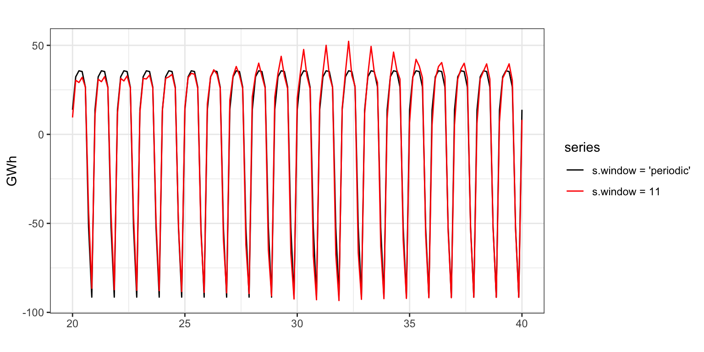
6 Resumen de los paquetes y funciones utilizadas
| Función | Paquete | Descripción |
|---|---|---|
| read.csv/read.csv2 | utils | Importa un fichero como base de datos, donde las observaciones son las filas y las variables son las columnas |
| subset | base | extrae un subconjunto de datos posibilitando el uso de índices |
| aggregate | stats | crea una serie agregada |
| cycle | stats | devuelve la estación de cada valor de la serie |
| decompose | stats | descompone la serie usando medias móviles |
| end | stats | da el fechado del último dato |
| frequency | stats | da la frecuencia de los datos |
| start | stats | da el fechado del primer dato |
| stl | stats | descompone la serie usando alisado por regresiones locales ponderadas |
| time | stats | extrae el fechado de una serie temporal |
| ts | stats | produce un objeto de clase serie temporal |
| window | stats | extrae un subconjunto de datos de una serie temporal |
| ggplot | ggplot2 | genera una gráfica |
| autolayer | forecast | añade una serie temporal a un gráfico ya creado |
| autoplot | forecast | dibuja gráficos de series temporales de forma sencilla |
| ggsubseriesplot | forecast | dibuja un gráfico donde cada componente estacional es dibujada como una subserie separada |
| ggseasonplot | forecast | dibuja un gráfico donde cada año (o equivalente) es dibujado como una serie separada contra el periodo estacional |
| remainder | forecast | extrae error de una descomposición |
| seasonal | forecast | extrae la componente estaciona de una descomposición |
| trendcycle | forecast | extrae la tendencia de una descomposición |
Todas las funciones gráficas del paquete forecast requieren tener instalada en R la librería ggplot2.
References
Courtillot, V., F. Lopes, and J. L. Le Mouël. 2021. “On the Prediction of Solar Cycles.” Solar Physics 296 (21). https://doi.org/10.1007/s11207-020-01760-7.
Metcalfe, Andrew V., and Paul S. P. Cowpertwait. 2009. Introductory Time Series with r. Springer New York. https://doi.org/10.1007/978-0-387-88698-5.
Wilson, J. H., and B. Keating. 1996. Previsiones En Los Negocios. Irwin, Madrid.